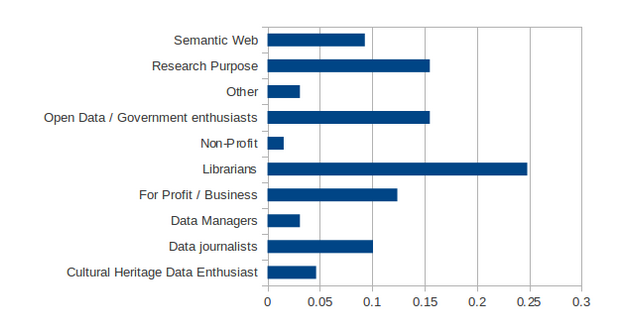
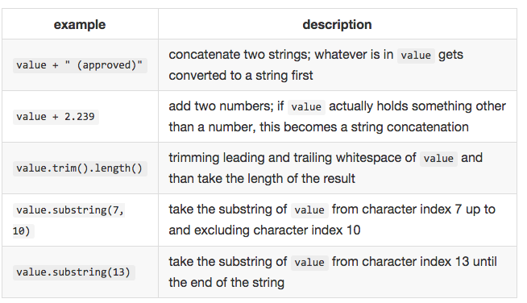
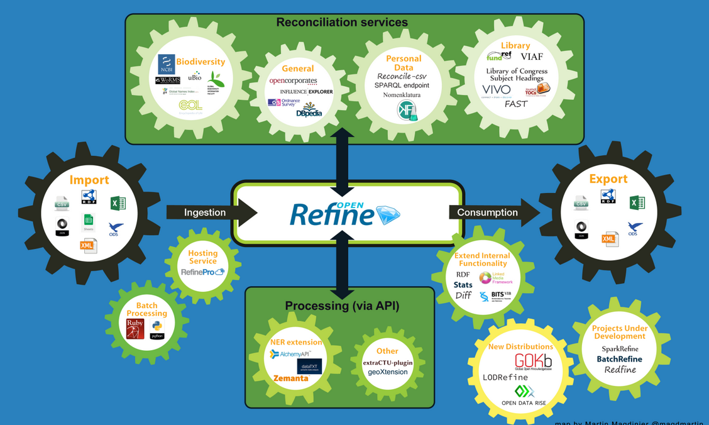

Code4Lib Edmonton 2016 Workshop
Prepare your data for visualization with Open Refine
Presented by Mariana Paredes-Olea and Weiwei Shi [https://github.com/code4libyeg/openrefine_workshop_2016](https://github.com/code4libyeg/openrefine_workshop_2016)
What is OpenRefine
OpenRefine is a free, open source tool for working with messy data, cleaning it up, transforming it from one format into another, and enhancing it with data from web services.
Who uses OpenRefine

What does OpenRefine offer?
- Powerful yet easy-to-use interface
- Quickly and interactively explore new datasets, normalize them and process them via API services
- Easy-to-learn scripting language
GREL
- GREL is the main language supported in Open Refine to allow you write powerful yet simple query to filter and transform data.
- You can access GREL from different menus
- Creating a custom text facet
- Transforming column using transformation function
- Adding a column based on existing column or by fetching URL
GREL is designed to resemble Javascript. So you can expect basic things to work, and know how they would work: 
GREL is designed to resemble Javascript. So you can expect basic things to work, and know how they would work:
GREL Basic Functions
- Support inside out: trim(toLowercase(value)) or in sequence syntax: value.toLowercase().trim()
- Call content from current column: value
- Call content from another column: cells['column_name'].value
- To input text, directly place it between single or double quote
[Documentation for GREL Functions](https://github.com/OpenRefine/OpenRefine/wiki/GREL-Functions)
Start a Open Refine Project

Rows vs Records
A row is a single line of your project.
A record is a combination of one or multiple rows identifying a unique object and sharing the same first column.
Geocoding with OpenRefine
Fetching
Use "Add Column by Fetching URLs", and use the follow expression to fetch result from Google Geocoding API: "http://maps.google.com/maps/api/geocode/json?sensor=false&address=" + escape(value, "url")
Parsing
Now you need to parse the json response into useful data by using the following expression: with(value.parseJson().results[0].geometry.location, pair, pair.lat +", " + pair.lng)
OpenRefine's Ecosystem
Reconciliation Services
With OpenRefine, we can perform reconciliation against any web service supporting the Reconciliation Service API.
- Reconcile-csv
- Nomenklatura
- SPARQL endpoints
- VIVO entities
- VIAF
- LCSH
- dbpedia
How to use reconciliation services
Example: VIAF and OpenRefine